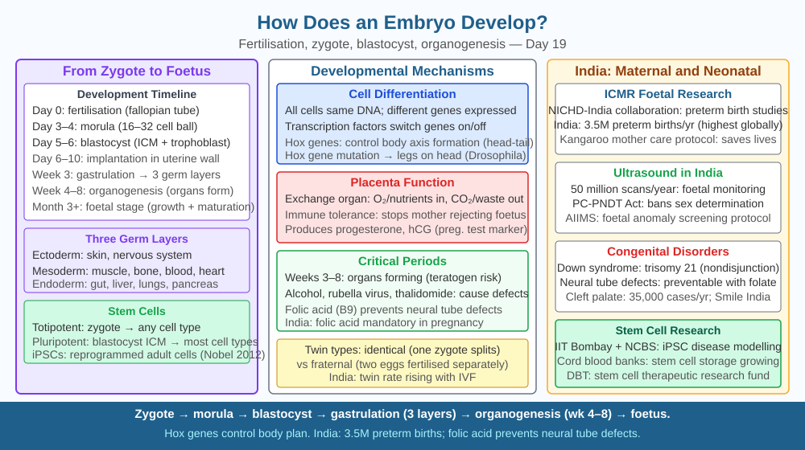

By the end of this lesson, you should be able to describe the stages from zygote to organogenesis, explain what cell differentiation is and how gene expression drives it, and predict what would happen if a critical developmental gene were switched off early in embryogenesis.
A fertilised human egg is a single cell — about 0.1 mm in diameter, barely visible to the naked eye. Nine months later, it has become a newborn with approximately 37 trillion cells organised into 200 distinct cell types: neurons that fire electrical signals, heart muscle cells that contract rhythmically, lens cells of the eye that are almost entirely transparent, and red blood cells that carry oxygen. Every one of those cells contains the same DNA — the same 46 chromosomes present in that original fertilised egg. So the question is not where the different cells come from, but how one set of instructions produces hundreds of different cell types, assembled into the right shapes in the right places at the right time.
Stage 1 — Fertilisation and the zygote: When a sperm fuses with an egg, the resulting cell is called a zygote. It contains a complete set of 46 chromosomes (23 from each parent) and the entire genetic blueprint for the new organism. Within 24 hours, the zygote begins to divide.
Stage 2 — Cleavage: The zygote undergoes rapid mitotic divisions called cleavage. Crucially, the total cell mass stays approximately the same — the cells (called blastomeres) get smaller with each division, not larger. After 3–4 days, there are 16–32 cells arranged in a solid ball called the morula (Latin for mulberry). Each blastomere at this stage is totipotent — it can theoretically develop into a complete organism, including the placenta and other support structures. This is why identical twins form: the early embryo splits and each half can develop independently.
Stage 3 — Blastocyst: By day 5–6, a fluid-filled cavity forms inside the cell mass, creating the blastocyst. It has two distinct regions: the inner cell mass (ICM), a cluster of about 30 cells that will form the embryo proper, and the trophoblast, the outer layer that will form the placenta. ICM cells are pluripotent — they can form any cell type in the body but not the placenta. These are the cells that, when cultured in the laboratory, become embryonic stem cells.
Stage 4 — Gastrulation: Around day 14, the inner cell mass reorganises into three fundamental layers called germ layers: - Ectoderm (outer): becomes skin, the nervous system (brain and spinal cord), and sensory organs - Mesoderm (middle): becomes muscle, bone, the heart, blood vessels, and kidneys - Endoderm (inner): becomes the lining of the gut, lungs, liver, and pancreas
Every organ in the body originates from one or more of these three layers. Gastrulation establishes the body plan.
Stage 5 — Organogenesis: From week 3 onwards, the germ layers fold and differentiate into the specific organs. The neural tube — precursor of the brain and spinal cord — forms from ectoderm by week 4. The heart begins beating around day 22. Limb buds appear by week 5. By week 8, all major organs are present in rudimentary form; the embryo is now called a foetus.
Cell differentiation — the central puzzle: All cells carry identical DNA, yet a liver cell and a neuron look and behave completely differently. The explanation is differential gene expression: each cell type switches on only the subset of genes relevant to its function, while the rest remain silenced. A liver cell expresses genes for albumin synthesis and detoxification enzymes; a photoreceptor cell in the retina expresses genes for the light-sensitive protein rhodopsin. The switching is controlled by transcription factors — proteins that bind to specific DNA sequences upstream of genes and either activate or block their transcription into mRNA.
Hox genes — the master architects: A special family of transcription factor genes called Hox genes (short for homeobox genes) act as positional labels along the body's head-to-tail axis. Hox genes expressed in the head region suppress leg formation there; Hox genes in the thorax region allow wing development in insects, or rib-bearing vertebrae in vertebrates. When a Hox gene is mutated in a fruit fly (Drosophila melanogaster), legs can grow where antennae should be — a transformation called Antennapedia. This demonstrates that Hox genes specify what structure forms where, not just whether cells divide. A Hox gene mutation early in vertebrate development can cause entire segments of the spine or limbs to be missing or malformed.
Thalidomide — a warning from developmental timing: In the late 1950s and early 1960s, the drug thalidomide was prescribed to pregnant women for morning sickness. It interfered with a signalling molecule called FGF (fibroblast growth factor) that guides limb bud development. The drug was most dangerous during weeks 4–8 of pregnancy — precisely when limb buds form. Thousands of babies were born with severely shortened or absent limbs (phocomelia). The same drug taken before or after this critical window caused no limb defects. This illustrates a key principle: developing tissues are sensitive to disruption only during critical periods when specific genes must be expressed in a precise sequence.
Think of the embryo as a construction site following a master blueprint (the genome):
Remove a page (switch off a Hox gene): that section of the building fails to take its correct form.
The included SVG shows a horizontal timeline from left (fertilisation, day 0) to right (week 8, foetus). Key stages are illustrated above the timeline: zygote (single cell), morula (solid ball), blastocyst (hollow with inner cell mass labelled), gastrula (three coloured layers — blue ectoderm, red mesoderm, yellow endoderm), and an 8-week foetus outline with organ systems colour-coded by germ layer origin. Below the timeline, an inset panel shows differential gene expression: two cells with identical DNA, but different genes highlighted in each (liver-specific genes active in one, neuron-specific genes active in the other), with the remaining genes shown as greyed-out (silenced).

The drug thalidomide caused limb defects only when taken during weeks 4–8 of pregnancy — the window when limb buds form. The same dose had no effect on limb development outside that window.
Predict: A researcher identifies a gene that is expressed only in the developing kidney tubules between weeks 5 and 10. If a viral infection in the mother switched this gene off at week 6, what would you predict about kidney structure in the newborn? What if the infection occurred at week 12 instead — would the outcome be the same? Use what you know about critical periods and differential gene expression to justify your answer.
What drives embryo development from a single fertilised egg cell?
Correct answer: c
Why is understanding embryonic differentiation more useful than just knowing babies develop?
Correct answer: b
What would happen if a critical developmental gene were switched off early in embryogenesis?
Correct answer: b
Explain today's concept to a younger student in 60 seconds without technical jargon. Then explain it again using the correct scientific vocabulary.
If both explanations describe the same mechanism, you have understood the concept rather than memorised it.
Your entire nervous system — every neuron in your brain, every nerve in your body — originated from a flat sheet of ectoderm cells that folded into a tube (the neural tube) during week 4 of development. The folding is driven by a simple mechanical process: cells on the inner surface of the sheet shrink while cells on the outer surface stay the same size, forcing the sheet to curl inward. If one row of cells fails to shrink, the tube stays open. The entire complexity of the human brain — 86 billion neurons, 100 trillion synaptic connections — emerges from this mechanical fold, guided by Hox genes and transcription factors acting in a precise sequence over eight weeks.
A fertilised egg develops into a complete organism through mitotic cleavage, gastrulation into three germ layers, and organogenesis; cell differentiation is driven by differential gene expression — each cell type switching on only its relevant genes — and disrupting a critical developmental gene during its active window, as Hox gene mutations and thalidomide both demonstrate, can prevent an entire organ or structure from forming.